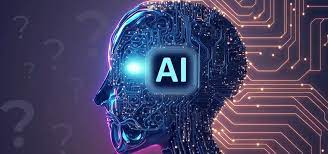

AI-driven tools can enhance various aspects of programming, from code generation to debugging and optimization. ChatGPT, for instance, can assist developers by providing code snippets, suggesting solutions to coding problems, and offering insights into best practices. Its natural language capabilities facilitate effective communication between developers and the AI, streamlining the coding process. Additionally, AI in programming enables advancements such as automated code review, which helps enforce coding standards and enhances code quality.
Relying on ChatGPT during Workouts of the Day (WODs) proved instrumental when facing substantial challenges. The AI’s assistance in understanding errors was valuable, yet a deliberate decision was made to avoid relying entirely on AI for every task. This approach aimed to maintain a robust understanding of programming concepts, striking a balance between leveraging AI for guidance and independently solving problems. By combining AI support with individual problem-solving efforts, an optimal balance was achieved, fostering a more comprehensive comprehension of the material.
The role of AI, especially ChatGPT, proved invaluable in the enhancement of technical essays. Its efficiency in aiding with content structuring, ensuring coherence, and seamlessly incorporating transitions allowed me to concentrate on the technical intricacies while entrusting the fine-tuning to the AI. Nevertheless, I recognized the occasional necessity of reviewing AI-generated content to ensure contextual accuracy and relevance. This collaborative approach, leveraging AI for its strengths while maintaining a human review for contextual nuances, resulted in a synergistic refinement process for technical writing.
In the culmination of the final project, ChatGPT assumed a minor role, primarily serving as a tool for brainstorming ideas and searching for fitting project names. Its contributions were more pronounced during the initial conceptualization phase rather than in the subsequent project implementation. This limited involvement of AI underscored the significance of human creativity and critical thinking in the project development process. While AI played a supportive role in idea generation and naming, the core aspects of project realization relied heavily on the unique capabilities of human ingenuity and problem-solving.
In my learning sessions, I deliberately limited the use of ChatGPT to enhance information retention. I observed that an excessive dependence on AI hindered my personal understanding, particularly when grappling with new concepts. Through this experience, I found that actively engaging with course material, rather than relying solely on AI assistance, fostered a deeper and more comprehensive learning process. This strategic balance allowed me to absorb and internalize information more effectively, emphasizing the importance of hands-on learning and individual cognitive effort in the educational journey..
Before participating in class or Discord discussions, I often turned to ChatGPT for swift and knowledgeable responses. However, I came to the realization that human interactions, despite being slower, frequently offered more nuanced and interactive solutions. The amalgamation of AI-generated responses and peer interactions significantly enriched the overall learning experience. This hybrid approach, blending the efficiency of AI with the depth of human engagement, proved to be a more holistic and rewarding method in the context of collaborative learning environments.
ChatGPT demonstrated proficiency in offering explanations and aiding in code-related tasks with efficiency. However, it became evident that its solutions were not always entirely accurate, necessitating validation and interpretation. While the use of AI in code-related tasks accelerated problem-solving, it concurrently demanded a level of critical evaluation to ensure reliable outcomes. Striking a balance between leveraging the AI’s capabilities for efficiency and incorporating human judgment for accuracy became crucial in optimizing the effectiveness of code-related interactions.
ChatGPT proved valuable in tasks involving brainstorming, creativity, team/project names, and styling. However, a crucial realization emerged regarding the significance of human input in decision-making, particularly in creative domains. While the AI’s suggestions were instrumental as starting points, the iterative refinement and injection of human creativity were essential to elevate the final outcomes. This recognition underlined the collaborative nature of AI-human partnerships, where the AI serves as a catalyst for ideas, and human judgment plays a pivotal role in shaping and perfecting creative endeavors.
AI tools like ChatGPT provided confidence and aided problem-solving. They served as helpful tools rather than learning hindrances, allowing quick access to information and suggestions that might have taken hours of internet searches. While AI offered efficiency, the need for independent learning and critical thinking was evident in certain scenarios.
While I haven’t extensively used ChatGPT outside ICS 314, I believe it holds promise as a learning assistance tool in real-world software engineering scenarios. Its potential in aiding brainstorming sessions, code analysis, and creative tasks could be valuable in professional settings.
AI, while beneficial, sometimes delayed solutions that could have been quickly resolved through more traditional means like a Google search. Its limitations in accuracy and context understanding were evident in specific scenarios. The challenge lies in balancing AI’s assistance with human input to optimize learning and problem-solving.
Balancing traditional methods with AI offers comprehensive solutions. AI aids learning but must be balanced with human input to ensure better engagement and knowledge retention. The synergy between AI-driven assistance and traditional learning methodologies enhances the learning experience by amalgamating efficiency and depth.
The outlook for the future of AI in software engineering education appears promising. Ongoing advancements should focus on enhancing AI tools to better complement traditional teaching methods and overcome limitations such as accuracy and contextual understanding. The integration of AI has the potential to evolve further, fostering a more interactive and personalized learning experience. As the synergy between AI and education continues to grow, there is optimism that these technologies will play an increasingly integral role in shaping the next generation of software engineers, offering innovative and tailored approaches to learning.
AI, particularly ChatGPT, emerges as a potent learning augmentation tool in the realm of software engineering education. Finding a harmonious balance between AI and traditional teaching methods has the potential to optimize learning experiences by capitalizing on the respective strengths of each approach. This collaborative strategy not only facilitates comprehensive learning but also nurtures essential skills such as critical thinking and problem-solving. The integration of AI as a complementary educational resource signifies a promising direction for fostering a well-rounded and effective learning environment in software engineering education.